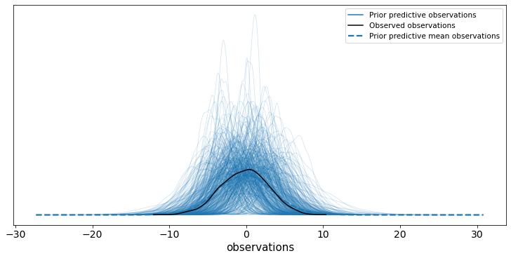
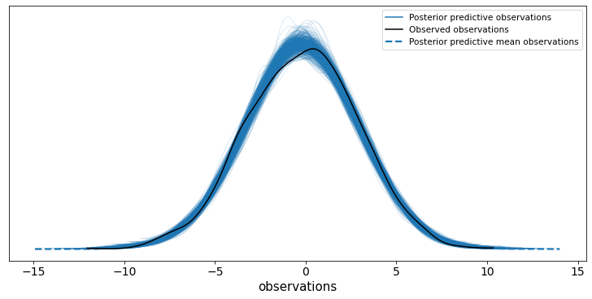
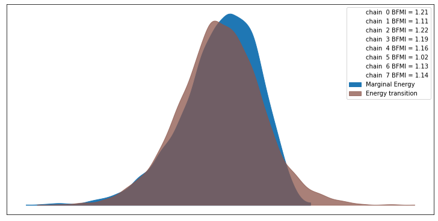
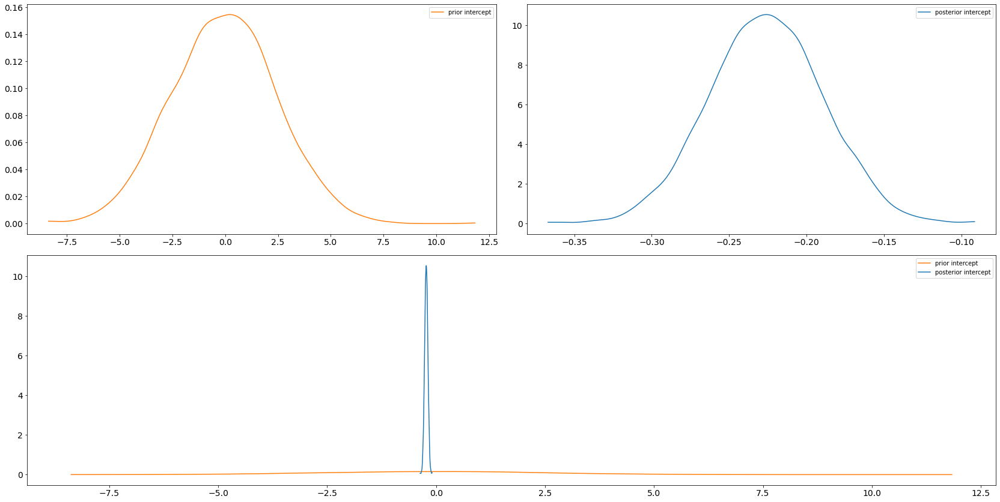
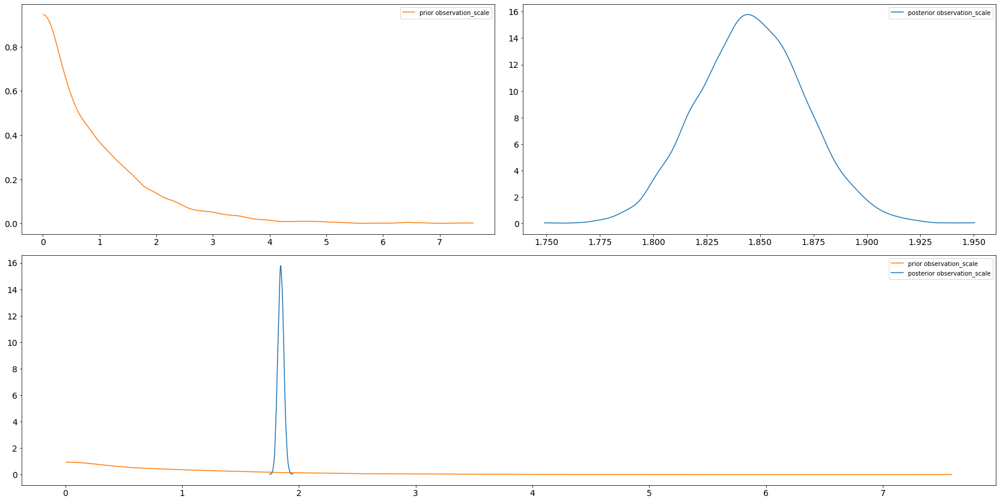
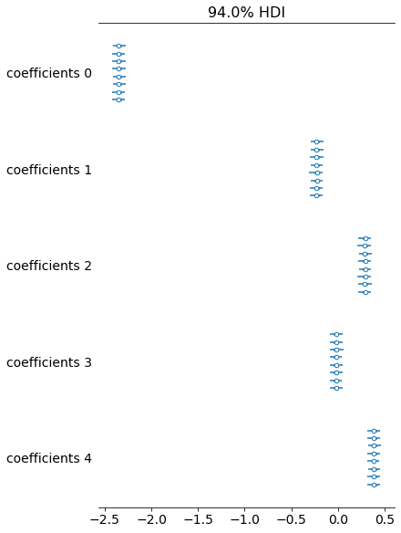
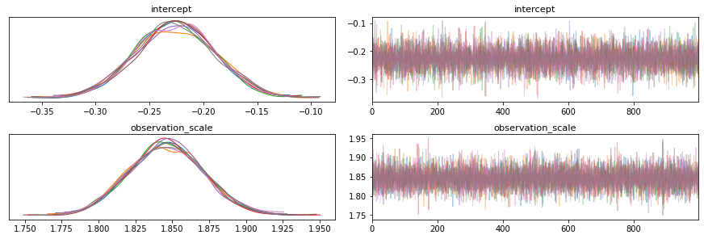
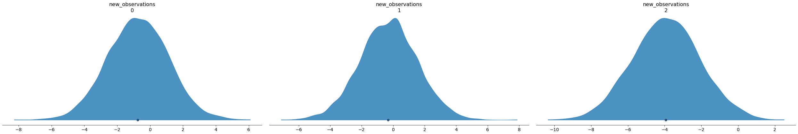

This post hopefully contains an end-to-end example of a Bayesian workflow for a simple model on some simulated data using TFP and arviz. For a more comprehensive guide on such a workflow, see e.g. Towards A Principled Bayesian Workflow.
I am hoping to update this post as I find better ways of doing this and new things are added to TF/TFP/arviz. At the time of writing, this post isn't quite fleshed out yet.
Just some imports and constants, skip this.
import logging import arviz as az import matplotlib.pyplot as plt import numpy as np import tensorflow as tf import tensorflow_probability as tfp from tensorflow_probability.python.internal import unnest plt.rcParams["figure.figsize"] = (10, 5) tf.get_logger().setLevel(logging.ERROR) tfd = tfp.distributions tfl = tf.linalg N = 2_500 P = 5 NUM_CHAINS = 8 NUM_RESULTS = 1_000 NUM_BURNIN_STEPS = 1_000 NUM_PRIOR_SAMPLES = 4096 INITIAL_STEP_SIZE = 1.0 PROPORTION_ADAPTION_STEPS = 0.8
print(f"arviz version: {az.__version__}") print(f"TF version: {tf.__version__}") print(f"TFP version: {tfp.__version__}")
arviz version: 0.10.0 TF version: 2.4.0 TFP version: 0.12.1
The model is a boring linear regression:
\begin{align*} \sigma &\sim Exponential(1) \\ \alpha &\sim Normal(0, 2.5^2) \\ \beta &\sim Normal(0, 1.0^2) \\ Y &\sim Normal(\alpha + X \beta, \sigma^2) \\ \end{align*}for some design matrix containing \(P\) features/covariates/predictors/whatever denoted by \(X\), and we have \(N\) observations denoted by \(Y\). In code:
def make_joint_dist(design_matrix): def joint_dist(): intercept = yield tfd.Normal(loc=0.0, scale=2.5, name="intercept") coefficients = yield tfd.Normal(loc=tf.zeros(P), scale=1.0, name="coefficients") observation_scale = yield tfd.Exponential(rate=1.0, name="observation_scale") yield tfd.Normal( loc=intercept + tfl.matvec(design_matrix, coefficients), scale=observation_scale, name="observations", ) return tfd.JointDistributionCoroutineAutoBatched(joint_dist) design_matrix = tfd.Normal(loc=0.0, scale=1.0).sample([N, P]) joint_dist = make_joint_dist(design_matrix)
I use a function to create the joint distribution here so that it's easy to make new joint distributions for different design matrices, we can see how that works at the end once we have some posterior samples.
Taking a sample from the joint distribution object will give us some simulated observations and the parameters which generated them:
data = joint_dist.sample() print(data)
StructTuple(
intercept=<tf.Tensor: shape=(), dtype=float32, numpy=-0.20901993>,
coefficients=<tf.Tensor: shape=(5,), dtype=float32, numpy=
array([-2.3835316 , -0.19555189, 0.3054796 , 0.030938 , 0.39104107],
dtype=float32)>,
observation_scale=<tf.Tensor: shape=(), dtype=float32, numpy=1.8365525>,
observations=<tf.Tensor: shape=(2500,), dtype=float32, numpy=
array([ 4.681982 , 0.494495 , 3.3885002, ..., 3.0582027, 1.5004369,
-0.6779976], dtype=float32)>
)
Working with simulated data like this is nice as you can easily sense check your inference by comparing your estimated posterior and the "true" parameter values.
In most circumstances you of course don't know the underlying mechanism which has generated the data, and you don't know the true values of the parameters which generated it - this is just an easy way to simulate some data and parameters for an example.
One of the first things to consider doing is a prior predictive check. This involves sampling observations from our generative model without conditioning on any data. It's good to see that the observations generated from the model aren't completely ridiculous and also to catch any coding errors early on. It's also really easy to do so there's no excuse really:
*prior_samples, prior_predictive = joint_dist.sample(NUM_PRIOR_SAMPLES) print(prior_predictive)
tf.Tensor( [[-3.5205534 -4.528192 0.25591993 ... -4.3896685 -1.5770044 -0.7582612 ] [-0.42647317 0.71366215 3.773345 ... -0.9740752 -1.5424446 4.6503186 ] [ 4.607047 3.3693523 6.6304727 ... 4.502372 7.3991976 6.2240896 ] ... [-3.2436218 -0.72438574 -1.5025095 ... -1.8662915 -3.8655753 0.99725056] [ 3.0118685 3.1012888 -1.0712335 ... 3.4267337 0.48165292 -1.1030183 ] [ 2.1230254 2.7200956 1.4965906 ... 3.4740658 1.3719496 1.5941529 ]], shape=(4096, 2500), dtype=float32)
To plot the check we can quickly create an arviz.InferenceData object which just
contains the prior predictive samples and the "real" observations. I always like to give
names to the dimensions where possible and think it helps with readability. One other
comment on this is that arviz expects shapes to be of the form: (chain, draw, *shape)
so we reshape the prior predictive samples to pretend they have one chain:
prior_trace = az.from_dict( observed_data={"observations": data.observations}, prior_predictive={"observations": prior_predictive[tf.newaxis, ...]}, coords={"observation": np.arange(N)}, dims={"observations": ["observation"]}, ) print(prior_trace.prior_predictive)
<xarray.Dataset>
Dimensions: (chain: 1, draw: 4096, observation: 2500)
Coordinates:
* chain (chain) int64 0
* draw (draw) int64 0 1 2 3 4 5 6 ... 4090 4091 4092 4093 4094 4095
* observation (observation) int64 0 1 2 3 4 5 ... 2495 2496 2497 2498 2499
Data variables:
observations (chain, draw, observation) float32 -3.521 -4.528 ... 1.594
Attributes:
created_at: 2021-01-06T22:23:41.549424
arviz_version: 0.10.0
Once that object is created, using arviz to do a basic prior predictive check using arviz.plot_ppc is easy:
ax = az.plot_ppc(prior_trace, group="prior", num_pp_samples=500)

Thankfully this check looks OK - given how we simulated the data anything else would be either very unlucky or a bug.
Now that the prior predictive check is done, we can move onto a harder problem - conditioning on the data and estimating the posterior distribution of the model parameters. Much of the code here is boilerplate and could be lifted into a more generic function/library.
My current favourite way to condition on the "observed" data is to create a (currently experimental) JointDistributionPinned, taken from the documentation:
This object represents an unnormalized probability density, and as such is not a
tfp.distributions.Distribution, and lackssampleandlog_probmethods. In their place, it provides:
unnormalized_log_prob,unnormalized_log_prob_partssample_unpinned,sample_weighted
pinned_joint_dist = joint_dist.experimental_pin(observations=data.observations) print(pinned_joint_dist.sample_unpinned())
StructTuple(
intercept=<tf.Tensor: shape=(), dtype=float32, numpy=1.5575541>,
coefficients=<tf.Tensor: shape=(5,), dtype=float32, numpy=
array([-1.2378179 , 0.31099358, 1.6653953 , 0.20364931, 0.66097695],
dtype=float32)>,
observation_scale=<tf.Tensor: shape=(), dtype=float32, numpy=0.18035434>
)
The first use of this pinned distribution object is to provide some default bijectors
which allow our MCMC routine to operate on the unconstrained space even though e.g. our
observation scale (\(\sigma\)) is positive. Stuff like this is handled automatically in
Stan when you specify bounds on parameters with e.g real<lower = 0> sigma;. These
default bijectors can be extracted for all the distributions with simply:
pinned_joint_bijector = pinned_joint_dist.experimental_default_event_space_bijector()
The second use is to provide a function which returns the unormalised log probability of the model parameters (conditioned on the data):
def target_log_prob_fn(*x): return pinned_joint_dist.unnormalized_log_prob(x)
In this example we use the No-U-Turn Sampler which can record/trace various useful bits of auxiliary information - useful for checking e.g. converge of the MCMC routine. TFP allows us to add a so-called trace function which enables us to record anything we want about the current state of the chain or the NUTS routine. At the moment I'm only recording three statistics and naming them as per the arviz sample stats.
def trace_fn(state, kernel_results): mapping = { "target_log_prob": "lp", "has_divergence": "diverging", "energy": "energy", } return {v: unnest.get_innermost(kernel_results, k) for k, v in mapping.items()}
There are plots later which use some of these values.
The unnest module isn't part of the public TFP API - but it does make writing this
function a lot easier.
When doing our prior predictive check we actually sampled many times from the prior, so one way of initialising the MCMC routine is to use some of those (one for each chain):
initial_state = [sample[:NUM_CHAINS] for sample in prior_samples]
In some cases this might not be a good idea, in particular if you have vague priors.
We also need to choose an initial step size, one of the parameters of Hamiltonian Monte Carlo algorithms, see Step Size Adaptation in Hamiltonian Monte Carlo for more. This parameter will be tuned in the algorithm warmup but needs to start somewhere. I think Stan uses a value of 1 for this, so I follow them:
initial_step_size = [ tf.constant(INITIAL_STEP_SIZE, shape=[NUM_CHAINS] + [1] * (len(x.shape) - 1)) for x in initial_state ]
The shape magic is to allow each chain and each model parameter component to find a different step size in the warmup phase of the MCMC routine.
I'm going to skim over the last few steps now, as they are more-or-less boilerplate and hopefully self explanatory:
nuts = tfp.mcmc.NoUTurnSampler( target_log_prob_fn=target_log_prob_fn, step_size=initial_step_size, ) transformed_nuts = tfp.mcmc.TransformedTransitionKernel( inner_kernel=nuts, bijector=pinned_joint_bijector.bijectors, ) transformed_adaptive_nuts = tfp.mcmc.DualAveragingStepSizeAdaptation( inner_kernel=transformed_nuts, num_adaptation_steps=int(PROPORTION_ADAPTION_STEPS * NUM_BURNIN_STEPS), ) @tf.function(autograph=False, experimental_compile=True) def run_mcmc(): return tfp.mcmc.sample_chain( num_results=NUM_RESULTS, num_burnin_steps=NUM_BURNIN_STEPS, current_state=initial_state, kernel=transformed_adaptive_nuts, trace_fn=trace_fn, ) posterior_samples, mcmc_stats = run_mcmc()
And that's it! We have posterior samples and some mcmc diagnostics, but did it work? (words based on one of my favourite paper titles: Yes, but Did It Work?: Evaluating Variational Inference).
I think the first thing most people do after running some MCMC stuff is look at a
summary table and some plots, so lets do that. We use the same arviz.InferenceData
class as the prior predictive check section, but now we have more things to add in. This
is actually my least favourite step and would love to know a better way of doing this
(this is probably the arviz.from_tfp function but I couldn't get it to work).
Firstly, I don't want to have to remember the names and ordering of my model parameters defined in my joint distribution, so I resort to using a private member function to get the parameter names back:
parameter_names = pinned_joint_dist._flat_resolve_names() print(parameter_names)
['intercept', 'coefficients', 'observation_scale']
Secondly, we can sample from the posterior predictive distribution as easily as we could from the prior, this is one of my favourite things about TFP:
*_, posterior_predictive = joint_dist.sample(value=posterior_samples)
Thirdly, remember that arviz expects shapes to be of the form (chain, draw, *shape)
and TFP gives us (draw, chain, *shape) hence we need to swap axes around.
trace = az.from_dict( prior={k: v[tf.newaxis, ...] for k, v in zip(parameter_names, prior_samples)}, posterior={ k: np.swapaxes(v, 0, 1) for k, v in zip(parameter_names, posterior_samples) }, prior_predictive={"observations": prior_predictive[tf.newaxis, ...]}, posterior_predictive={"observations": np.swapaxes(posterior_predictive, 0, 1)}, sample_stats={k: np.swapaxes(v, 0, 1) for k, v in mcmc_stats.items()}, coords={"observation": np.arange(N), "coefficient": np.arange(P)}, observed_data={"observations": data.observations}, dims={"observations": ["observation"], "coefficients": ["coefficient"]}, ) print(trace)
Inference data with groups: > posterior > posterior_predictive > sample_stats > prior > prior_predictive > observed_data
But now that is over - we can easily do lots of stuff:
print(az.summary(trace).filter(items=["mean", "hdi_3%", "hdi_97%", "ess_mean", "r_hat"]))
mean hdi_3% hdi_97% ess_mean r_hat
intercept -0.226 -0.295 -0.155 13227.0 1.0
coefficients[0] -2.348 -2.416 -2.278 12830.0 1.0
coefficients[1] -0.228 -0.295 -0.158 13265.0 1.0
coefficients[2] 0.291 0.219 0.359 12464.0 1.0
coefficients[3] -0.020 -0.087 0.050 14511.0 1.0
coefficients[4] 0.385 0.318 0.457 13551.0 1.0
observation_scale 1.846 1.798 1.893 15892.0 1.0
I only filter the columns here to not clutter the post too much.
Again, the "true" values of the model parameters are:
for name in parameter_names: print(f"{name}: {getattr(data, name).numpy()}")
intercept: -0.20901992917060852 coefficients: [-2.3835316 -0.19555189 0.3054796 0.030938 0.39104107] observation_scale: 1.8365525007247925
so everything looks OK so far!
There are quite a few plots we can do, and I'm not going to talk about them in detail but will instead include hopefully helpful links:
We can do the posterior predictive check in the exact same way as the prior one - just
change the group argument:
ax = az.plot_ppc(trace, group="posterior", num_pp_samples=500)

For more on this see A Conceptual Introduction to Hamiltonian Monte Carlo TLDR the closer the two densities look the more likely the algorithm has worked. The plot also shows the Bayesian fraction of missing information (BFMI), which is defined in the paper alongside this note:
Empirically, values of this energy Bayesian fraction of missing information below 0.3 have proven problematic, although more theoretical work is needed to formalize any exact threshold.
ax = az.plot_energy(trace)

axs = az.plot_dist_comparison(trace, var_names=["intercept"])

axs = az.plot_dist_comparison(trace, var_names=["observation_scale"])

Unfortunately due to the small uncertainty in comparison to the difference in locations this plot looks a bit rubbish, but often it's really useful so I've included it.
axs = az.plot_forest(trace, var_names=["coefficients"])

axs = az.plot_trace(trace, var_names=["intercept", "observation_scale"])

We've explored the posterior and everything looks fine, so next thing your pal comes along with a new design matrix with three rows and asks you to make predictions using all your fancy Bayesian stuff. Luckily it's easy to create a new joint distribution over these three new bits of data using the funciton we created at the start:
new_design_matrix = np.random.randn(3, P).astype(np.float32) new_joint_dist = make_joint_dist(new_design_matrix) print(new_joint_dist)
tfp.distributions.JointDistributionCoroutineAutoBatched("JointDistributionCoroutineAutoBatched", batch_shape=[], event_shape=StructTuple(
intercept=[],
coefficients=[5],
observation_scale=[],
observations=[3]
), dtype=StructTuple(
intercept=float32,
coefficients=float32,
observation_scale=float32,
observations=float32
))
We can then sample observations using our posterior samples, that is, we are conditioning on the original dataset and predicting on this new one. This code is exactly the same as the first posterior predictive check we did:
*_, new_posterior_predictive = new_joint_dist.sample(value=posterior_samples)
We could give a point estimate as a prediction using e.g. the posterior mean by averaging/reducing the chain and draw dimensions:
print(tf.reduce_mean(new_posterior_predictive, axis=[0, 1]))
tf.Tensor([-0.7574589 -0.31100208 -3.9276493 ], shape=(3,), dtype=float32)
Or we could use arviz to plot the predictive distribution and admit our uncertainty:
new_trace = az.from_dict( posterior_predictive={"new_observations": np.swapaxes(new_posterior_predictive, 0, 1)}, coords={"new_observations": np.arange(3)}, dims={"new_observations": ["new_observation"]}, ) print(f"new_posterior_predictive:\n{new_trace.posterior_predictive}")
new_posterior_predictive:
<xarray.Dataset>
Dimensions: (chain: 8, draw: 1000, new_observation: 3)
Coordinates:
* chain (chain) int64 0 1 2 3 4 5 6 7
* draw (draw) int64 0 1 2 3 4 5 6 ... 993 994 995 996 997 998 999
* new_observation (new_observation) int64 0 1 2
Data variables:
new_observations (chain, draw, new_observation) float32 -2.394 ... -1.649
Attributes:
created_at: 2021-01-06T22:21:17.335155
arviz_version: 0.10.0
axs = az.plot_density( new_trace, group="posterior_predictive", outline=False, shade=0.8, point_estimate="mean", hdi_prob=1, )

This is quite a long post hopefully showing the beginnings of some sort of workflow with TFP and arviz. I'll try to keep it updated as I find out new things and hopefully have some time to focus on some parts in more detail or adding more steps (in particular model comparison).